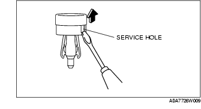
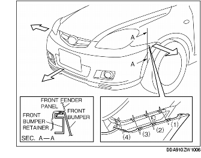

Front bumper removal/installation
1. Disconnect the negative battery cable for vehicles with front fog lights.
2. Disconnect the front fog light connector for vehicles with front fog flights.
3. Remove in the order indicated in the table.

|
1
|
Screw A
|
|
2
|
Fastener A
|
|
3
|
Screw B
|
|
4
|
Fastener B
(See Fastener B Removal Note)
|
|
5
|
Screw C
|
|
6
|
Fastener C
|
|
7
|
Front bumper
|
4. Install in the reverse order of removal.
5. Perform the front fog light aiming adjustment for vehicles with front fog flights. (See FRONT FOG LIGHT AIMING.)
Fastener B Removal Note
1. Remove fastener B by inserting a small flathead screwdriver into the service hole as shown in the figure.

Front Bumper Removal Note
1. Pull the front bumper ends (wheel arch) outward in numerical order to disengage from the front bumper retainer.

- • When disengaging the front bumper from the front bumper retainer, the bumper could fall and be damaged. Secure the bumper so that it does not fall.
2. Remove the front bumper from the body.
Front Bumper Installation Note
1. Spread the front bumper ends (wheel arches) apart.
2. Attach the front bumper to the body.
3. Press the front bumper connecting area into the body to engage with the front bumper retainer.